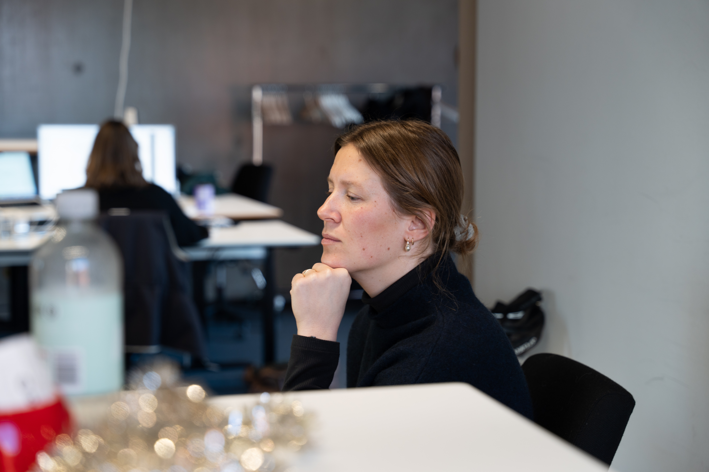

Pill-shaped, lowercase or sentence-case. Use the orange ghost as the default, primary fill is reserved for the single most important action on a page.
Big numbers carry outcomes. Set Regular weight in Neutral 950 by default — the size does the work, the colour stays calm. Reserve Orange 500 for one hero figure per slide, the way the wordmark dot is reserved.
We build systems that are partition-tolerant from day one, because regulated workloads can't tolerate single points of failure.
We ship models into production where they meet real users, measured against business outcomes, not benchmarks.
Observability, runbooks, and on-call tooling are part of the brief, not an afterthought once the platform is live.
Set in Blue 900, never orange. The mark is large, drawn in Blue 700. If we have a portrait of the speaker, set it in a 48 px circle before the name; if not, the line stands alone.
Trifork's team understood our regulatory environment from the first workshop. We shipped the first release a quarter ahead of plan.
The two markings that bracket every slide. Top-left is the tracked label, set in Orange 500 following the type system's .tf-label-spaced rules: 13 px Medium, 0.16em tracking, uppercase. Bottom-left holds the page number with the deck name close beside it, separated by a thin slash — the page number aligns flush with the slide's content left edge. Small Trifork wordmark anchors the bottom-right. No dividing rules.
Photography sits in 24 px-cornered containers, full-bleed inside the frame. Keep aspect ratios honest, don't stretch.
